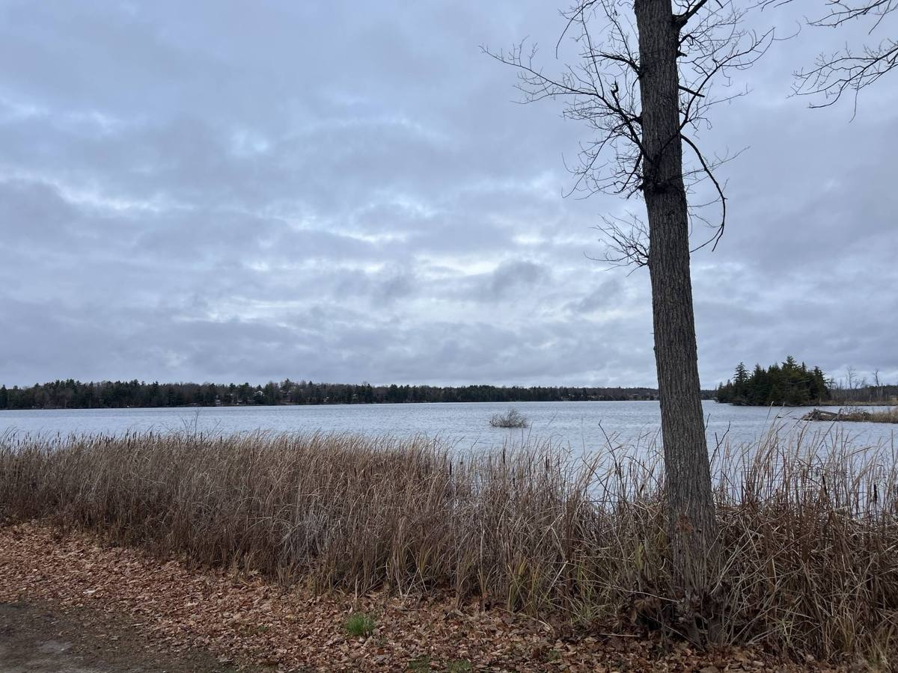

A memory
A shoebox of receipts
"In my first year as a bookkeeper, a florist brought me a shoebox of receipts on 29 April, two days before her tax deadline."
Priya Shah
That day
"She cried at my desk."
Three things from that day
- A shoebox.
- 29 April.
- Two days before her tax deadline.
What Priya saw
"She was not bad with money.
Nobody had ever shown her a spreadsheet slowly."
The feeling
That is what it feels like to be afraid of your own numbers.
What has not changed

The month still ends.
The receipts still arrive.
What has changed

"I used to dread the end of the month. Now it takes me twenty minutes on a Sunday."
What to do
Bring your own numbers.
Build a cash-flow sheet, an invoice tracker and a price calculator with them, in Excel or Google Sheets.
Spreadsheets Without Fear
Six weekly lessons, live on Zoom. Thursdays at 7pm Eastern, 90 minutes each.
It starts Thursday 14 January 2027. At most 20 people per group.
Miss a lesson? Each recording stays available for 30 days.
Taught by Priya Shah, a bookkeeper for 12 years.
$249, or $199 if you register before 31 December 2026.
Register on the course page [needs: registration link]